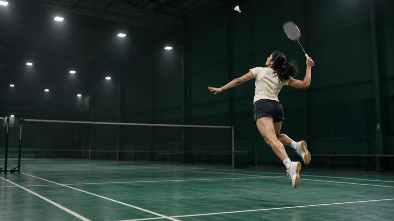

Back to the source.
Follow a result to the relevant play. A clip and its event context belong beside the answer.
There’s a story
in every rally.A rally.
A story.
Turn recorded badminton matches into replayable moments, defined analytics and evidence you can inspect.
Discover the experienceThe recovery you didn’t notice. The exchange you want to watch again. The small detail that changes how you see your game.
Hours of footage hold moments like these. Rally connects the play, the context and the evidence, so you can find what matters to you.
You can follow a pattern, revisit a favourite rally, or simply enjoy seeing a good moment again. Every session doesn’t have to be an examination.

Watch the moment become something you can explore.
Select a phase, reveal an illustrated movement layer, then follow an answer back to its source.
Illustrative product experience. Scenes and annotations are created for this website, not produced by an analysis of a recorded match. Example answers are prewritten.
In the product, evidence links connect answers to the relevant moments in your recording. When the evidence is missing, the answer should say so.
A connected intelligence system, from the first frame to the question you ask.
The strength is in how the pieces work together. Open a capability to see what it contributes.
Start with a recorded match. Keep the source, playback and review in one workspace, with moments you can revisit at their event frames.
Camera position, visibility, lighting and occlusion affect what can be supported.
Locate players and court structure, and connect observations across frames. Court calibration gives image positions a spatial context.
Tracks are estimates. A temporary player label is not verified identity.
Bring candidate contacts, exchanges and rallies onto a coherent timeline. Review the play in context instead of searching a whole recording.
Shot naming is a rule-based preview. An unresolved outcome stays unresolved.
Compute rally summaries and accepted event totals through explicit logic. Explore court patterns where calibration and usable tracking evidence support them.
Movement is estimated and depends on calibration, coverage and track quality.
Explore a question with the relevant clips and event references close at hand. Defined calculations supply the numbers; language helps explain them.
A fluent explanation cannot replace missing source evidence.
Inspect uncertain interpretations, correct supported outcomes and let accepted changes flow through the analytics. Export results for further review.
Corrections and evaluation strengthen the record. They do not guarantee perfect perception.
Some days you want the detail. Some days you just want the replay.
Find an exchange worth revisiting, explore the context around a shot, or follow your matches over time. Choose the depth that feels useful.
Player experienceThe game is our first deep application. The underlying idea goes further.
A reusable platform connects visual observations to a structured record, reproducible measures and an explanation you can investigate.
The original source
People, objects, scene
What happened, when
Explicit calculations
Traceable source links
Useful understanding
The models can evolve.
The evidence still has to hold.
Designed to reuse valid evidence and bring deeper tools to the questions that need them. Defined calculations keep exact numbers reproducible, while explanation stays connected to the source.
Small, fast objects. Continuous movement. Meaningful court geometry. Badminton makes the foundation earn its understanding of the real world.
An insight should come with a way to question it.
Trust comes from a visible relationship between a result and the evidence behind it, including the limits of the recording.
Follow a result to the relevant play. A clip and its event context belong beside the answer.
Visible movement is not laboratory biomechanics. Calibration, tracking quality and coverage matter.
Missing evidence should be visible. An unmeasured distance or unresolved outcome is not zero.
Court-side review works with the evidence available. Four-player attribution, verified cross-session identity and additional sports remain development areas.
Recorded badminton matches are the starting point. A stable view, visible court and players, usable lighting and limited occlusion help. Camera movement, cuts and compression can reduce what the system can support. Suitability needs to be assessed for the actual recording.
The implemented foundation includes recorded-match playback, frame-linked rally review, match summaries, moments, evidence-linked questions, supported corrections and exports. Shot naming is a rule-based preview. Court movement estimates depend on valid calibration and tracking.
Doubles recordings can be replayed and reviewed at rally and court-side level. Current attribution distinguishes two court-side slots. These do not establish four independent player identities or reliable per-partner statistics.
The current story is about recorded-video analysis. Live and near-real-time operation are development directions that require their own source, latency and reliability validation. Processing time varies with footage and the configured system.
This website makes no validated shuttle-speed, force, precise 3D biomechanics or injury-risk claim. Some court movement can be estimated with calibration and usable tracks; those estimates remain conditional. The demo’s speed question deliberately shows an insufficient-evidence response.
That is the architectural ambition. Other sports and visual workflows can share useful infrastructure, but each needs its own perception models, event rules, evaluation and user experience. They are future opportunities, not available domain products.
Have footage, a court or a question?
Start with what you want to understand.
Prepare a short brief for a demo conversation. It stays in this browser; nothing is sent.
Your brief is ready. It has not been sent.